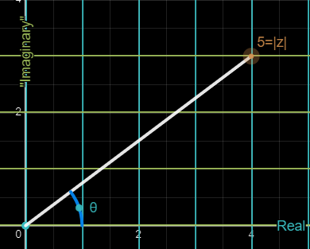

The first thing we are going to learn about is addition. This is one works just like adding vectors. a+ib + a2+ib2 (the numbers are indexes) = (a+a2)+(b+b2)i There is a simple visual representation, again identical to that of vectors. For example, lets take 3+2i and add -2+i. Working it out, its 1+3i. Visuall, its this:

To continue further, we must redefine how we think of basic arithmetic operations: multiplying and exponentiating. Remember division is just an extension of multiplication and roots are just different-looking powers. While at it, substraction is just the addition of the negative, aka a-b=a+(-b).
First of all, we need to understand numbers in polar form: they are a distance away from the center and forming a certain angle. Instead of X and Y we have a single number for the length, the module of a complex number, and Theta, the angle it forms with the +X axis. We are going to use radians all the way because they are the natural language of trigonometry. 
I will give you time to figure out on your own a way to go from a+ib to r angle theta. Got it?